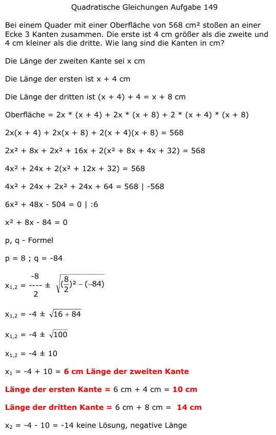

Aufgabe 149 Bei einem Quader mit einer Oberfläche von 568 cm2 stoßen an einer Ecke 3 Kanten zusammen. Die erste ist 4 cm größer als die zweite und 4 cm kleiner als die dritte. Wie lang sind die Kanten in cm? Die Länge der zweiten Kante sei x cm Die Länge der ersten ist x + 4 cm Die Länge der dritten ist (x + 4) + 4 = x + 8 cm Oberfläche = = 2x*(x + 4) + 2x*(x + 8) + 2*(x + 4)*(x + 8) 2x(x + 4) + 2x(x + 8) + 2(x + 4)(x + 8) = 568 2x2 + 8x + 2x2 + 16x + 2(x2 + 8x + 4x + 32) = 568 4x2 + 24x + 2(x2 + 12x + 32) = 568 4x2 + 24x + 2x2 + 24x + 64 = 568 | -568 6x2 + 48x - 504 = 0 | :6 x2 + 8x - 84 = 0 p, q - Formel p = 8 ; q = -84  x1,2 = -4 ± 10 x1 = -4 + 10 = 6 cm Länge der zweiten Kante Länge der ersten Kante = 6 cm + 4 cm = 10 cm Länge der dritten Kante = 6 cm + 8 cm = 14 cm x2 = -4 - 10 = -14 keine Lösung, negative Länge